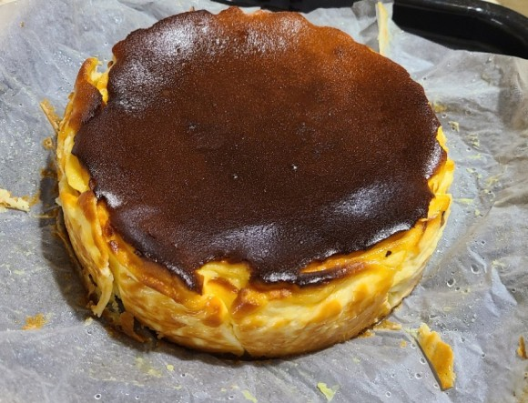

스페인 바스크 치즈케익 
_재료
크림치즈 680g
설탕 200g(비정제가 덜 달다)
소금1/4t
휘핑크림 320ml
중력뷰 20g
달걀 4개
_도구
원형팬 유산지
_과정
1.팬 옆면, 바닥 기름칠
2. 유산지가 팬보다 높이 올라가게 깔아준다.
3. 실온 상태의 크림치즈+설탕+소금 넣어 휘핑기로 섞는다.
4. 크림화되면 완성
5. 달걀을 하나씩 넣으면서 중간속도로 섞어준다.
6. 휘핑크림 넣는다.
7. 밀가루 넣어 가볍게 섞는다.
8. 틀에 부어둔다. - 틀 밑에 큰 팬 받힌다.
9. 팬을 몇번 내려쳐서 공기방울 제거한다.
10. 200°c 팬에서 60~65분 굽는다.
11. 케익 표면이 거의 탄 것처럼 되어야 한다.
12. 케익이 많이 부풀어 오르고, 가운데가 출렁이면 완성
13. 식힌다.
14. 최소 2시간~하루 냉장보관
_실패했다면 참고 영상